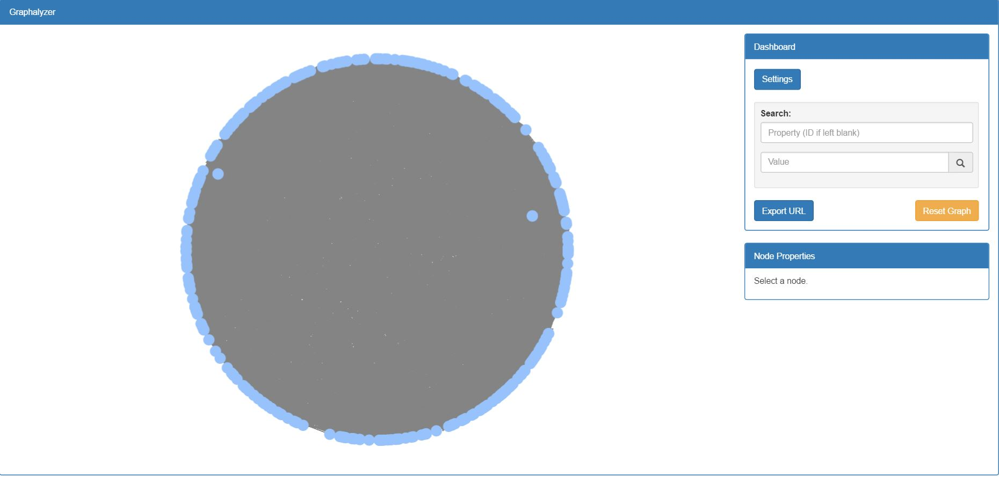

An Iowa State Senior Design joint project with Workiva, Graphalyzer visualizes data of any context into an interactive graph. Users can perform basic analysis on the graph such as visual filtering, node searching, and even specify parameters to draw subgraphs.
Graphalyzer intends to be a completely lightweight and open source tool. The context of the data is arbitrary. As long as the data can be represented in the form of nodes and edges, the user can interact with it.
Graphalyzer allows the user to look for specific characteristics of the data they are trying to analyze. One easy and intuitive way the user can do this is through filtering. Filtering allows the user to specify properties they want to focus on. For example, if the user loads a graph describing a database of users with user IDs and timecodes, as well as other properties, and they want to only focus on members of the graph with user IDs greater than or less than a number they specify, Graphalyzer filters out nodes that do not meet the user's query.
The user can also filter out nodes that don't have a property. In this example, let's remove all the nodes that don't have a user ID.
Finally, an easy way to search for a member of the graph is to filter nodes that have a property that isn't equal to a value. This is beneficial in cases where the user knows a member of the graph has a property equal to a certain value but does not know the specific name of that member.
Graphalyzer also allows the user to search for members of a graph. This is important for finding important data stored within the data, and finding all of its relationships. Graphalyzer makes this very easy to do by allowing the user to specify a property to search for, and the value of that property. The example below shows a very large Pokémon graph, with nodes representing the 151 Generation I Pokémon, as well as all Pokémon types and moves that exist in the game. The edges represent moves each Pokémon knows and their types. In total, this is a graph of thousands of nodes, and hundreds of thousands of edges, showing the power Graphalyzer has when visualizing graphs. The seemingly filled circle of grey comes from the sheer amount of edges.
In this giant graph, we want to find Pikachu. In the search bar on the right, we specify the property, in this case name. Next, we specify the value, in this case pikachu. Graphalyzer finds Pikachu, focuses in on that node, and automatically selects it for the properties to display on the right.
Graphalyzer doesn't have to draw the entire graph if the data is too large. One of the reasons why data can be hard to understand is because it is so large, even when looking at it in the form of a graph. Graphalyzer allows users to specify a subgraph of the data they want to see, starting from a source node, and exploring out to a certain depth of connectivity.
Here, we load the Pokémon graph, but we provide a source node ID, in this case, the ID points to Bulbasaur. Next, we provide the depth of connectivity to be 1, before finally drawing the graph.
Here is our resulting graph. If the graph is explored, all of the outgoing nodes from Bulbasaur represent all of the moves it can learn, and the one incoming node is Ivysaur, Bulbasaur's evolution.
Sharing data is easy with Graphalyzer. If you want to share the work you've done on your graph, including filtering, searching, and subgraphs, simply click the Export URL button on the Dashboard. This copies an auto-generated web URL to your clipboard. Just paste this in an email, group chat, etc. to share this with another user, and when they load the page, Graphalyzer will automatically load to the state your graph was in.